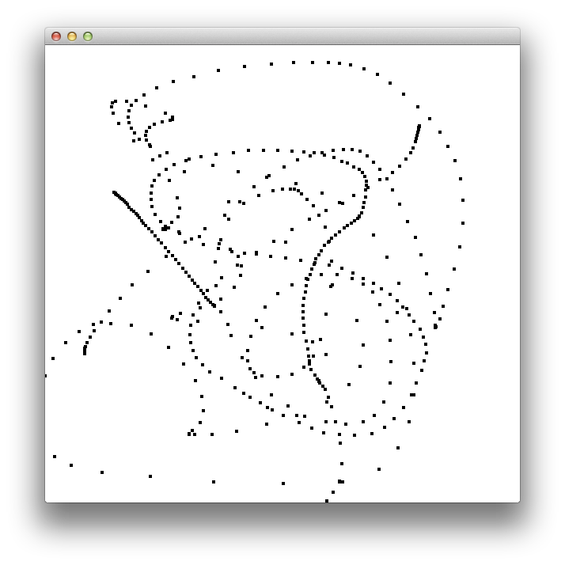
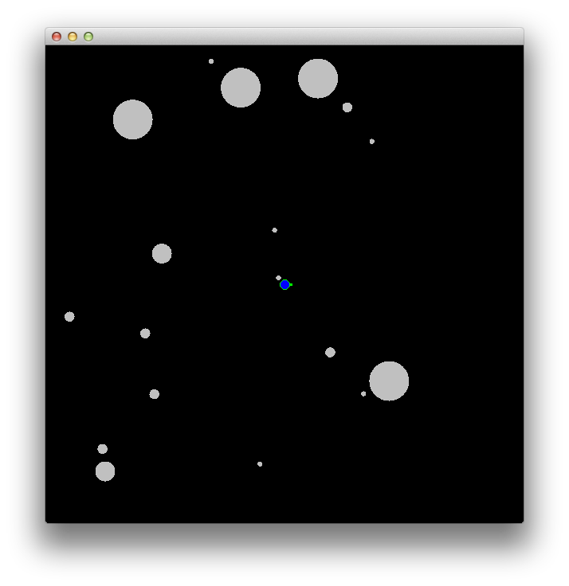

Scala and Data Structures¶
Warning
This section is not ready yet. Working on it!
Collections¶
Just for Scala
Doesn’t make sense before loops in most languages.
One mutable, one immutable
Many standard methods
Many higher-order methods
Syntax
Use () for indexing
List also have ML style operations
Creation, pass-by-name
Case Classes¶
Immutable struct in simplest usage
Simple syntax for grouping data
Works as a pattern
Copy method
GUIs¶
scala.swing wraps javax.swing
Cleaner beginner syntax
No explicit inheritance
Reactions use partial functions
Drawbacks: Currently no JTree, Tables complex, Button syntax uses companion object
Full Java2D
Really using Java
Override paint method
Events for animations
Keyboard, Mouse, Timer
Simple GUI Example¶
This example shows a simple GUI where there is no inheritance. Clicking the button increments the number in the text field. If the user has changed it so that it is not an integer, it is set back to 0.
Those familiar with Java will notice a lot of similarities. This is because the scala.swing library is a wrapper around Java’s Swing library. The ideas are similar, but the way in which you interact with them has been changed to match the Scala style.
1import swing._
2
3val frame = new MainFrame
4val field = new TextField("0")
5val button = Button("Increment") {
6 try {
7 field.text = (field.text.toInt+1).toString
8 } catch {
9 case ex:
10 NumberFormatException => field.text = "0"
11 }
12}
13
14val bp = new BorderPanel
15import BorderPanel.Position._
16bp.layout += field -> North
17bp.layout += button -> Center
18frame.contents = bp
19frame.centerOnScreen
20frame.open
Simple GUI Example using scala.util.Try¶
Scala supports simplified exception handling through its
scala.util.Try wrapper type. This is an important Scala idiom for
representing a computation that either succeeds with a result value or
fails with an exception.
For example, say you want to validate and convert a text field in your UI from string to integer. You could write this simple conversion function to do so:
scala> def toInteger(s: String) = scala.util.Try(s.toInt)
toInteger: (s: String)scala.util.Try[Int]
res0: scala.util.Try[Int] = Failure(java.lang.NumberFormatException: For input string: "blah")
scala> toInteger("35")
res1: scala.util.Try[Int] = Success(35)
Then you can use getOrElse to process the enclosed value and, if
the Try value represents failure, return the given default value
(as you see above when we tried to validate the string “blah”).
scala> toInteger("35").getOrElse(-1)
res2: Int = 35
scala> toInteger("blah").getOrElse(-1)
res3: Int = -1
It’s clear that being able to validate input efficiently is something that excites us. It certainly makes UI development more reliable and resilient to failures. (We’ve had more than our share of fun chasing down validation bugs in web and mobile app development. Most of the time it is caused by unnecessarily complex validation logic.)
You can see how this plays out in a slightly reworked version of the code:
1import swing._
2import scala.util.Try
3
4val frame = new MainFrame
5val field = new TextField("0")
6
7val button = Button("Increment") {
8 val attempt = Try(field.text.toInt)
9 field.text = (attempt.getOrElse(-1)+1).toString
10}
11
12val bp = new BorderPanel
13import BorderPanel.Position._
14bp.layout += field -> North
15bp.layout += button -> Center
16frame.contents = bp
17frame.centerOnScreen
18frame.open
Simple Paint Example¶
This example shows how you can override the paint method to make a custom drawing. It also shows interactions with the mouse.
1import swing._
2import event._
3import java.awt.{Color,Shape}
4import java.awt.geom._
5
6var dots = List.empty[Shape]
7
8val panel = new Panel {
9 override def paint(g:Graphics2D) {
10 g.setPaint(Color.white)
11 g.fillRect(0,0,size.width,size.height)
12 g.setPaint(Color.black)
13 for(s <- dots) g.fill(s)
14 }
15 listenTo(mouse.clicks,mouse.moves)
16 reactions += {
17 case mc: MouseClicked =>
18 dots ::= new Ellipse2D.Double(mc.point.x-2,mc.point.y-2,5,5)
19 repaint
20 case mc: MouseDragged =>
21 dots ::= new Ellipse2D.Double(mc.point.x-2,mc.point.y-2,5,5)
22 repaint
23 }
24}
25
26val frame = new MainFrame {
27 contents = panel
28 size = new Dimension(600,600)
29 centerOnScreen
30}
31
32frame.open
Here’s what the output looks like when you drag the mouse quasi-randomly on the blank canvas that first comes appears. (Your output may vary!)
A More Complex GUI Example¶
This is a large GUI example. There are two lists with a text fields and some buttons. The first list is populated by the text field and the buttons move things between lists or remove them from the second list.
The populating from the text field demonstrates how you listen to GUI elements and react to them. The behavior of the lists shows how collection methods can play a role in GUIs.
1import swing._
2import event._
3
4val list1 = new ListView[String]()
5val list2 = new ListView[String]()
6val buttons = new FlowPanel {
7 contents += Button("<-") {
8 list1.listData ++= list2.selection.items
9 list2.listData = list2.listData.diff(list2.selection.items)
10 }
11 contents += Button("->") {
12 list2.listData ++= list1.selection.items
13 list1.listData = list1.listData.diff(list1.selection.items)
14 }
15 contents += Button("Remove") {
16 list2.listData = list2.listData.diff(list2.selection.items)
17 }
18}
19val field = new TextField() {
20 listenTo(this)
21 reactions += {
22 case ed:
23 EditDone =>
24list1.listData :
25 += text
26 text = ""
27 }
28}
29
30val frame = new MainFrame {
31 contents = new BorderPanel {
32 import BorderPanel.Position._
33 layout += field -> North
34 layout += new ScrollPane(list1) -> West
35 layout += new ScrollPane(list2) -> East
36 layout += buttons -> Center
37 }
38 size = new Dimension(600,500)
39 centerOnScreen
40}
41
42frame.open
Asteroids¶
This program is a little implementation of asteroids. It shows keyboard events and the use of case classes to group data together.
We start by importing varius dependencies. This shows how you can take advantage of existing Java libraries.
Case classes are used to maintain information about key elements of the game, notably
the asteroids and bullets. Although you see the word class here, we’re primarily using
class to aggregate the data (think about C struct but even nicer). These are used to
maintain two typesafe lists of asteroids and bullets, respectively, with type List[Asteroid]
and List[Bullet].
1import swing._
2import event._
3import java.awt.{Color,Shape}
4import java.awt.geom._
5import javax.swing.Timer
6
7case class Asteroid(x:Double,y:Double,vx:Double,vy:Double,size:Double)
8case class Bullet(x:Double,y:Double,vx:Double,vy:Double,age:Int)
9
10val windowSize = 600
11val shipSize = 6
12
13var asteroids = List.fill(5){
14 val theta = math.random*math.Pi*2
15 Asteroid(windowSize/2+math.cos(theta)*windowSize/4,
16 windowSize/2+math.sin(theta)*windowSize/4,
17 math.random-0.5,math.random-0.5,50)
18}
19var bullets = List[Bullet]()
20var shipX = windowSize/2.0
21var shipY = windowSize/2.0
22var heading = 0.0
23var shipVx = 0.0
24var shipVy = 0.0
25var leftDown = false
26var rightDown = false
The wrap() method does what you might be thinking it does. It takes an x
or y coordinate (even though you only see x in the parameter name) of a
given asteroid and ensures it falls within the bounds of the window. Note that
this references an external “global” value windowSize. Because this
value is immutable, there is no risk of a side effect. (This could be called
the revival of the const from C/C++ and Pascal but in a more modern
formulation.)
1def wrap(x:Double):Double = {
2 var nx = x
3 while(nx < 0) nx += windowSize
4 while(nx > windowSize) nx -= windowSize
5 nx
6}
The definition of the panel is where the actual drawing (and redrawing) of the game takes place. It also shows how to clearly separate the drawing from the reactions to events of interest (keyboard and mouse). Notably, we can handle these events without having to use classes. This allows us to stay focused on design principles instead of the vagaries of event objects and interfaces (even though these details are still present, being able to match the event’s type allows us to avoid premature complexity from a student perspective.)
1val panel = new Panel {
2 override def paint(g:Graphics2D) {
3 g.setPaint(Color.black)
4 g.fillRect(0,0,size.width,size.height)
5 g.setPaint(Color.lightGray)
6 for(a <- asteroids) g.fill(new Ellipse2D.Double(a.x-a.size/2,a.y-a.size/2,a.size,a.size))
7 g.setPaint(Color.red)
8 for(b <- bullets) g.fill(new Rectangle2D.Double(b.x,b.y,2,2))
9 g.setPaint(Color.blue)
10 g.fill(new Ellipse2D.Double(shipX-shipSize,shipY-shipSize,shipSize*2,shipSize*2))
11 g.setPaint(Color.green)
12 g.draw(new Ellipse2D.Double(shipX-shipSize,shipY-shipSize,shipSize*2,shipSize*2))
13 g.fill(new Ellipse2D.Double(shipX+(shipSize+2)*math.cos(heading)-2,shipY+(shipSize+2)*math.sin(heading)-2,4,4))
14 }
15 listenTo(keys,mouse.clicks)
16 reactions += {
17 case kp:KeyPressed =>
18 if(kp.key == Key.Left) leftDown = true
19 else if(kp.key == Key.Right) rightDown = true
20 else if(kp.key == Key.Up) {
21 shipVx += math.cos(heading)*0.2
22 shipVy += math.sin(heading)*0.2
23 } else if(kp.key == Key.Down) {
24 shipVx -= math.cos(heading)*0.2
25 shipVy -= math.sin(heading)*0.2
26 } else if(kp.key == Key.Space) {
27 bullets ::= Bullet(shipX+(shipSize+2)*math.cos(heading),shipY+(shipSize+2)*math.sin(heading),shipVx+3*math.cos(heading),shipVy+3*math.sin(heading),0)
28 }
29 case kp:KeyReleased =>
30 if(kp.key == Key.Left) leftDown = false
31 else if(kp.key == Key.Right) rightDown = false
32 case me:MouseEntered => requestFocus
33 }
34 preferredSize = new Dimension(windowSize,windowSize)
35}
A timer is particularly useful in game design, where you want to have self-updating without user interaction. In the case of this game, whether or not the user is doing anything, asteroids continue moving, subject to their velocities. Same for bullets. There is also logic to determine collisions and whether the ship is destroyed (which ends the game).
1val timer:Timer = new Timer(10,Swing.ActionListener(e => {
2 if(leftDown) heading -= math.Pi/40
3 if(rightDown) heading += math.Pi/40
4 asteroids = asteroids.map(a => {
5 a.copy(x = wrap(a.x+a.vx), y = wrap(a.y+a.vy))
6 })
7 shipX = wrap(shipX+shipVx)
8 shipY = wrap(shipY+shipVy)
9 var hit = List[Asteroid]()
10 bullets = bullets.map(b => {
11 b.copy(x = wrap(b.x+b.vx), y = wrap(b.y+b.vy), age = b.age+1)
12 }).filter(b => {
13 b.age<100 && asteroids.forall(a => {
14 val dx = b.x-a.x
15 val dy = b.y-a.y
16 val dsqr = dx*dx+dy*dy
17 val isHit = dsqr < a.size*a.size/4
18 if(isHit) hit ::= a
19 !isHit
20 })
21 })
22 asteroids = asteroids.flatMap(a => {
23 if(hit.contains(a)) {
24 if(a.size <=10) List()
25 else List.fill(4)(Asteroid(a.x+(math.random-0.5)*a.size,a.y+(math.random-0.5)*a.size,a.vx+math.random-0.5,a.vy+math.random-0.5,a.size/2))
26 } else List(a)
27 })
28 if(asteroids.exists(a => {
29 val dx = shipX-a.x
30 val dy = shipY-a.y
31 val dsqr = dx*dx+dy*dy
32 dsqr < (shipSize+a.size/2)*(shipSize+a.size/2)
33 })) timer.stop()
34 panel.repaint
35}))
Setup of the game is fairly concise. Create the main (Swing) frame and set the desired properties. In particular, we embed the created panel (a method that is familiar to anyone who has taught Java based UIs using AWT or Swing) and disallow frame resizing. We also center the frame on the screen (if supported). Then we display the frame and start the timer.
While there are a few details about Swing to know here, much of this code is common to all Swing application development, so it is eminently teachable–and you can always point students to the basic documentation for Java to learn the details.
1val frame = new MainFrame {
2 contents = panel
3 resizable = false
4 centerOnScreen
5}
6
7frame.open
8panel.requestFocus
9timer.start
Here’s a screenshot of the game:
Basic Data Structures for CS and DS¶
Pure OO
Fewer quirks than Java
Powerful type system
Traits
Rich collections
Libraries again
Can make things interesting/relevant
Multithreading and networking
VS Code (our favorite) and IntelliJ (optional alternative)
Scalable language
Libraries as language
Special methods